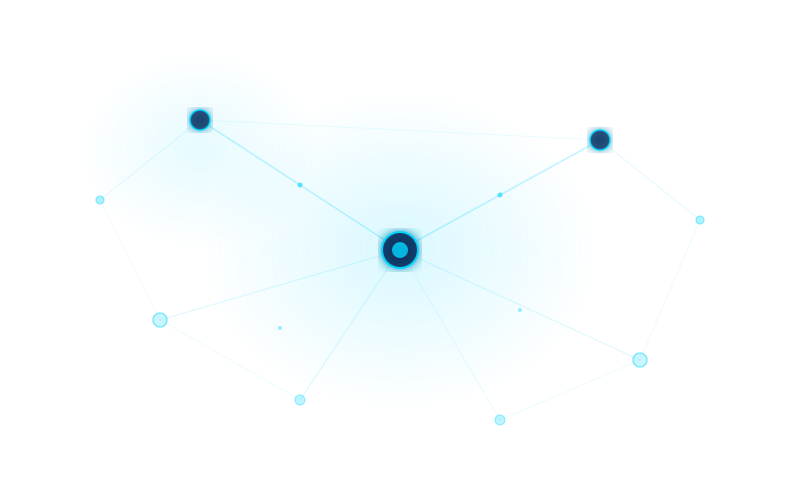
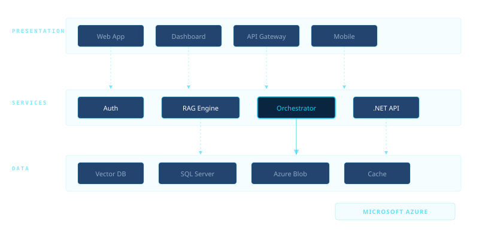

Abstract Graphic Motifs

Data Flow / Node Graph

System Architecture Diagram
All illustrations use the navy/cyan palette only. No stock photography of robots, servers, or generic "tech" imagery. Graphics convey technical depth without visual noise.